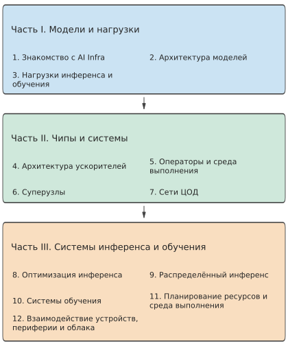

Предисловие¶
Моя предыдущая книга «Глубокое понимание AI-агента» посвящена архитектуре агентов и практике их разработки. Общаясь с читателями и отвечая на их вопросы, я всё яснее осознавал: чтобы хорошо разрабатывать приложения на основе моделей, необходимо также понимать инфраструктуру, на которой они работают. С одной стороны, это сами модели: как они обрабатывают входные данные, генерируют выходные и взаимодействуют с контекстом и окружением. С другой — системы выполнения моделей: где хранятся параметры и состояние контекста, как выполняются вычисления, как взаимодействуют несколько ускорителей и как вызовы моделей сопрягаются с программными инструментами. Так появилась эта книга, посвящённая инфраструктуре, которая обеспечивает обучение и инференс моделей, — AI Infra.
Чтобы понять, зачем разработчикам приложений нужны такие низкоуровневые знания, рассмотрим знакомую аналогию. Большинству инженеров-программистов не приходится самостоятельно разрабатывать операционные системы, компиляторы и микросхемы, однако им всё равно необходимо изучать операционные системы, принципы построения компиляторов и архитектуру компьютеров. Эти знания помогают понять абстракции, от которых зависят программы, и скрытые за ними реализации. Выделение блока памяти, чтение файла и вызов функции кажутся простыми операциями, но каждая из них требует ресурсов и времени. Только понимая эти издержки, можно объяснить, почему программа работает медленно и как её улучшить. Для разработки приложений на основе моделей необходима такая же база. Размер выбранной модели, длина сохраняемого контекста, число одновременно выполняемых запросов и размещение задачи локально или в облаке — всё это меняет объём работы, которую должна выполнить система.
Повышение уровня абстракции программирования: от операционной системы к контексту модели¶
Во время обучения в докторантуре по совместной программе Microsoft Research Asia и Научно-технического университета Китая я занимался исследованиями компьютерных систем, поэтому вполне естественно привык рассматривать приложения через распределение задач между операционной системой, компилятором и аппаратным обеспечением. В названиях двух ведущих конференций в этой области — SOSP (Symposium on Operating Systems Principles) и OSDI (Operating Systems Design and Implementation) — присутствует «OS», то есть операционная система. Традиционная операционная система должна поддерживать самые разнообразные приложения, а компилятор и аппаратное обеспечение — предоставлять универсальные возможности для заранее неизвестных программ. Раньше при оптимизации систем нам всегда приходилось учитывать компромисс между программируемостью и производительностью: жертвовать программируемостью ради предельной производительности зачастую было не лучшим решением.
Но сегодня важнейшим приложением стала LLM, и в системах инференса и обучения AI всё — от выполнения операторов до распределённого планирования — можно оптимизировать под конкретную модель и архитектуру ускорителя, что открывает новые возможности для совместной межуровневой оптимизации. Я считаю, что перенос абстракции программирования с операционной системы на контекст модели — одно из важнейших изменений в области компьютерных систем за последние десятилетия. В некотором смысле модель стала операционной системой эпохи LLM, а AI-инфраструктура — компьютерной архитектурой эпохи LLM. Книга «Компьютерная архитектура: количественный подход» стала для меня введением в компьютерную архитектуру, однако в области AI-инфраструктуры пока нет подобной книги, в которой проектирование систем количественно выводилось бы из аппаратных ограничений и архитектуры моделей. Именно это побудило меня написать эту книгу.
От оценки порядка величин к проектированию систем¶
Раньше, занимаясь ускорением центров обработки данных, независимо от того, шла ли речь об инференсе моделей, обработке сетевого трафика или доступе к хранилищу, я всегда начинал с оценки порядка величин: сколько вычислений требуется для выполнения задачи и какой объём данных нужно прочитать и записать? Помещаются ли данные, которые должны постоянно находиться в памяти, в видеопамять? Достаточна ли пропускная способность хранилища и межсоединений для подачи данных? Какие нижние границы времени выполнения задают соответственно вычисления, чтение и запись, а также этапы, которые необходимо выполнять последовательно? Именно эту привычку отражает практика back-of-the-envelope estimation, за которую выступает Jeff Dean, — грубая оценка с помощью бумаги и ручки. Зачастую всего несколько вычислений помогают понять, стоит ли продолжать развивать выбранное направление и какую проблему следует решать в первую очередь.
Есть и более непосредственная причина, побудившая меня взяться за эту книгу. Общаясь со специалистами по AI-инфраструктуре, я обнаружил, что многие хорошо знакомы с моделями и фреймворками, но ещё не развили интуитивного понимания порядка величин ёмкости, пропускной способности, вычислительной мощности и задержки. Уметь перечислить использованные в проекте технологии и уметь оценить его осуществимость и примерный уровень производительности — две разные компетенции. Я надеюсь, что эта книга поможет читателям приобрести вторую из них.
Ошибки в оценке порядка величин свойственны не только людям, но и AI. Недавно я пробовал поручать таким моделям, как GPT-6 Astra и Claude Fable 5.1, оценку производительности систем инференса или обучения моделей, а также новых архитектур чипов. Эти модели способны привести формулы и получить на вид точные числа, но всё равно упускают фундаментальные ограничения, определяющие результат: иногда учитывают только чтение весов, забывая, что механизму внимания также требуется читать KV-кэш; иногда оценивают время чтения, но не проверяют, помещаются ли в видеопамять в совокупности веса, KV-кэш и рабочая область среды выполнения; иногда вычисляют скорость исходя из пиковой вычислительной мощности, но не проверяют, способна ли пропускная способность хранилища непрерывно обеспечивать подачу данных; иногда равномерно распределяют объём работы между несколькими ускорителями, но упускают обмен данными между ними; а иногда получают очень высокую пропускную способность, не учитывая задержку, обусловленную последовательными зависимостями и обменом данными туда и обратно. Если упустить хотя бы одно из этих ограничений, вывод может отличаться от действительности в несколько раз или даже на несколько порядков величины.
Поэтому я хочу, чтобы через всю книгу проходил следующий метод: выводить проектные решения из ограничений. Сначала необходимо чётко определить задачу и требования к качеству, затем перечислить вычисления, хранение данных, обмен данными и зависимости, проверить, достаточно ли ёмкости видеопамяти и других ресурсов хранения, удовлетворяет ли пропускная способность хранилища и межсоединений потребностям вычислений в данных и какие задержки, вызванные зависимостями, невозможно устранить. После этого можно обсуждать, как распределить работу между моделями, где хранить состояние и как организовать выполнение. Только последовательно учтя все известные фундаментальные ограничения, можно исключить заведомо невозможные варианты; накладные расходы и вариативность реальных систем следует и дальше уточнять с помощью измерений. Оценка не обязана быть точной с самого начала, но необходимо понимать, что в неё включено, а что осталось за её пределами.
От ускорения операторов до объединения десяти тысяч ускорителей¶
Ограничения — источник проектных решений. В 2016 году, проходя стажировку в Microsoft Research Asia, я вместе с командой исследовал ускорение на FPGA глубоких нейронных сетей, применявшихся для ранжирования результатов поиска Microsoft Bing. Веса модели постоянно переносились во внутрикристальную память из внешней, что ограничивало скорость вычислений. Я подумал: нельзя ли распределить модель между несколькими FPGA, чтобы каждая её часть оставалась в локальной внутрикристальной памяти, а через высокоскоростную сеть передавались лишь промежуточные результаты? Я с воодушевлением рассказал об этой идее наставнику Сюй Нини, и он ответил, что это называется «параллелизмом модели». Где выполнять вычисления, как должны перемещаться данные и что позволяет сэкономить специализация — уже тогда я постоянно размышлял над этими вопросами. В те годы мой научный руководитель, доктор Чжан Линьтао, постоянно напоминал: оптимизацию необходимо доводить до предела, допускаемого физикой. Позже в статье о KV-Direct я написал: «близко к физическим пределам базового оборудования». Тогда у меня и сформировалась привычка: сначала на основе первых принципов вычислить верхнюю границу, допускаемую оборудованием, а затем определить, насколько система от неё далека. Эта привычка проходит через всю мою последующую работу и через всю эту книгу.
Присоединившись к Huawei в 2019 году, я участвовал в проекте AKG по автоматической генерации операторов для фреймворка глубокого обучения MindSpore. Эта работа продолжала прежний подход совместного проектирования программного и аппаратного обеспечения: вычисления модели преобразовывались в программы, подходящие для выполнения на NPU Ascend, а компилятор определял разбиение данных на блоки, их размещение и порядок выполнения. Я до сих пор помню, как повсюду искал подходящий алгоритм для слияния оператора softmax. Прочитав опубликованную NVIDIA в 2018 году работу о потоковом softmax, я наконец нашёл способ реализовать такое слияние. Лишь позднее я осознал, что тогда фактически нащупал одну из ключевых идей будущего алгоритма внимания FlashAttention: сочетать потоковую редукцию с разбиением на блоки и слиянием, сокращая объём хранения, чтения и записи промежуточных результатов.
В 2020 году я присоединился к проекту Unified Bus (UB, унифицированное соединение) и начал исследовать совместную работу ускорителей в ещё большем масштабе: как обеспечить эффективное совместное выполнение одной вычислительной задачи десятками тысяч процессоров?
Когда мы только начинали продвигать эту идею внутри Huawei, то столкнулись с многочисленными сомнениями со стороны других подразделений. Тогда кто-то спросил: «Сейчас модели обучают максимум на восьми картах. Ты создаёшь систему на десять тысяч карт — но когда вообще появятся десять тысяч карт?» В то время во всей компании не было и десяти тысяч карт. Для людей, привыкших обучать модели на нескольких картах в пределах одной машины, проектирование соединения для десяти тысяч карт действительно казалось далёким от насущных потребностей.
Мы пришли к такому выводу, поскольку увидели другую совокупность свидетельств. В 2019 году доктор Тань Кунь представил тенденцию развития потребностей AI в вычислительных ресурсах в виде диаграммы рассеяния и заметил, что потребности растут гораздо быстрее, чем производительность одного чипа. Это побудило его продвигать исследования высокопроизводительных соединений для десятков тысяч карт. В 2020 году я присоединился к проекту, а публикация статьи о GPT-3 предоставила новые аргументы в пользу этого направления. Если объём вычислений, необходимый для обучения моделей, продолжит расти такими темпами, придётся организовать совместную работу большего числа ускорителей. Исследование и реализация архитектуры соединения требуют времени, поэтому начинать лишь после того, как потребность проявится в полной мере, скорее всего, будет уже слишком поздно.
Сегодня UB применяется в системах Ascend 910C и 950. На момент написания этой книги архитектура кластера для обучения AI на NPU, основанная на UB, является единственной в стране архитектурой, поддерживающей масштаб свыше десяти тысяч карт. Теперь, оглядываясь назад, необходимость обучения на десяти тысячах карт уже нетрудно понять. При проектировании системы необходимо одновременно ясно видеть как текущую нагрузку, так и изменяющиеся условия. То, что восьми карт было достаточно для выполнения привычных тогда задач, — практический опыт; то, что рост потребностей в вычислениях приведёт к более масштабной совместной работе, — прогноз на будущее. Чтобы убедить других, необходимо чётко объяснить тенденции, ресурсы и издержки, на которых основан этот прогноз.
От ускорения инференса моделей через AKG к UB — эти работы охватывали разные масштабы, но я вновь и вновь сталкивался с одними и теми же вопросами: где находятся данные, необходимые для вычислений, и не превосходят ли затраты на их перемещение стоимость собственно необходимых вычислений? Можно ли снизить затраты на перемещение данных, изменив абстракции системы и приложения так, чтобы система располагала дополнительной информацией от приложения? Все эти работы начинались с изменения некоторого соотношения: скорость чтения из внешней памяти перестала удовлетворять вычислительным потребностям, что побудило нас ускорить ранжирование Bing с помощью FPGA; потребности в вычислениях начали расти быстрее производительности одного чипа, что побудило нас продвигать соединение десяти тысяч карт.
После ухода из Huawei и основания собственной компании в 2023 году эти вопросы вновь предстали передо мной, но уже в другой форме. Разрабатываемому нами AI-агенту требовалось голосовое взаимодействие с человеком в реальном времени. Сколько придётся ждать пользователю после окончания фразы, прежде чем он услышит ответ? И сколько будет стоить обслуживание получасового телефонного разговора?
В 2024 году, ещё до выпуска GPT-4o, мы запустили голосовое взаимодействие в реальном времени. Позднее, сравнив его с API голосового взаимодействия в реальном времени на базе GPT-4o, мы обнаружили, что наши эксплуатационные расходы составляют примерно одну сотую от стоимости использования этого API. Я до сих пор помню, что в конце 2023 года задержка в первой демонстрации голосового телефонного разговора достигала пяти секунд. Мы разделили весь конвейер взаимодействия на части, сначала оценили, сколько вычислений требуется для одного инференса модели и сколько данных нужно прочитать, а затем начали последовательно всё улучшать; после этого продолжили оптимизировать передачу данных по сети, обращения к базе данных и другие операции. Так задержка сократилась с пяти секунд до 2,5 секунды, затем до одной секунды, а позднее — примерно до 500–600 миллисекунд.
Этот опыт помог мне осознать, насколько непосредственно разработка приложений связана с инфраструктурой. Даже для одного и того же голосового взаимодействия в реальном времени многократное различие в задержке способно полностью изменить впечатление от продукта, а различие в стоимости на порядок — изменить набор поддерживаемых бизнес-моделей.
Что я хочу объяснить в этой книге¶
Такая связь между приложениями и инфраструктурой существует и внутри процесса разработки моделей. В сильных командах, создающих фундаментальные модели, я всё чаще наблюдаю подход, выходящий за рамки традиционного разделения труда: тот, кто лучше всех понимает Infra, занимается алгоритмами; тот, кто лучше всех понимает алгоритмы, занимается данными; тот, кто лучше всех понимает данные, занимается Infra. Эта фраза отражает глубину взаимопонимания. Разработчик алгоритмов должен знать ограничения оборудования по ёмкости, пропускной способности и обмену данными, чтобы учитывать их в архитектуре модели; специалист по данным должен понимать, как обучается модель, чтобы определять наиболее ценные примеры и задачи обучения; инженер Infra должен знать, как организованы и используются данные и какова их длина, чтобы действительно направлять системные ресурсы на эффективное обучение и инференс.
В последние годы такое межуровневое взаимодействие уже проявляется в проектировании моделей. Хорошие примеры — DeepSeek V4 и V4.1. В архитектуре V4 изначально в полной мере учитывается эффективность Infra: сочетание локального окна, сжатия контекста и разреженного выбора уменьшает объём состояния, которое необходимо хранить для длинного контекста, и количество повторно считываемых данных. Ограничения, связанные с объёмом видеопамяти, пропускной способностью хранилища и вычислениями, напрямую влияют на то, как модель представляет и использует контекст.
V4.1 Flash идёт ещё дальше: асимметричная архитектура каузального кодировщика-декодировщика (Causal Encoder-Decoder, CED) по-новому распределяет задачи понимания и генерации, перераспределяя вычислительные ресурсы с учётом нагрузки, при которой AI-агент получает много входных данных, но генерирует сравнительно мало выходных. Это показывает, что требования к эффективности системы способны стимулировать инновации в самой архитектуре модели.
Я хочу, чтобы читатели также сформировали такое межуровневое понимание: видя архитектуру модели, могли представить, какую работу она требует от ускорителя; видя возможности оборудования, могли определить, как изменить модель и способ её выполнения, чтобы действительно воспользоваться этими возможностями.
Сквозная тема этого анализа — перемещение данных. Вычислительным блокам необходимо получать веса и промежуточные результаты, нескольким ускорителям — обмениваться вычисленными данными, а удалённым сервисам — принимать входные данные и возвращать результаты. Мы видим, как модель генерирует ответ, но на нижнем уровне раз за разом происходят чтение, вычисление, сохранение и передача. На эффективность выполнения влияют место хранения данных, количество повторных использований, интерфейсы, через которые они должны пройти, и необходимость ожидания со стороны последующих операций.
Поэтому в этой книге постоянно задаются пять вопросов: что перемещать, сколько перемещать, сколько раз перемещать, через что перемещать и кто должен этого ждать. От иерархии памяти на кристалле через суперузлы — группы ускорителей, тесно взаимодействующих посредством высокоскоростных соединений, — и сети центров обработки данных до распределения задач между оконечными устройствами, периферией и облаком эти пять вопросов помогают определить величины, которые необходимо рассчитать. Сохранение данных позволяет сократить повторные вычисления, но занимает доступную ёмкость; увеличение масштаба параллелизма позволяет распределить работу, но усиливает обмен данными; сокращение передачи может потребовать дополнительных локальных вычислений, а также способно изменить качество результата.
Чтобы ответить на эти пять вопросов, необходимо рассчитать каждую величину — именно поэтому подзаголовок этой книги звучит как «Количественный анализ и проектирование систем». Книга «Архитектура компьютера: количественный подход» служит прекрасным примером такого метода анализа. Настоящая книга также призвана применять упомянутую выше привычку к оценке на каждом уровне проектирования: исходя из рабочей нагрузки модели и сопоставляя её с ограничениями ресурсов, объяснять выбор способа выполнения и то, как его следует пересмотреть при изменении условий.
Структура книги¶
Двенадцать глав выстроены в последовательности «понять требования рабочей нагрузки — изучить ресурсы выполнения — организовать целостную систему», как показано на рис. 0-1. Первая часть посвящена моделям и рабочим нагрузкам (главы 1–3): в ней формируется методика анализа и объясняется происхождение объёма вычислений, объёма данных и зависимостей между задачами. Вторая часть посвящена чипам и системам (главы 4–7): от выполнения на одном ускорителе мы переходим к совместной работе нескольких ускорителей и рассматриваем, как ресурсы справляются с этой нагрузкой. Третья часть посвящена системам инференса и обучения (главы 8–12): в ней исследуется организация запросов, состояния модели и процесса обучения, а также рассматриваются среда выполнения задач и развёртывание на конечных устройствах, периферии и в облаке.

Рис. 0-1. Структура книги и последовательность чтения. Каждая предыдущая часть закладывает аналитическую основу для следующей; при переходе к обслуживанию и развёртыванию необходимо заново проверить выбор модели и ресурсов с учётом качества выполнения задачи, времени её завершения и стоимости.
Ниже перечислены основные вопросы, на которые отвечает каждая глава. Сначала вы можете найти здесь интересующий вас вопрос, а затем посмотреть, какие основы для его понимания заложены в предыдущих главах.
Часть I. Модели и рабочие нагрузки
- Глава 1. Первое знакомство с AI Infra: как увидеть систему целиком и с помощью нескольких ключевых чисел оценить один запуск модели?
- Глава 2. Архитектура модели: как вычисления, параметры и состояние контекста модели формируют требования к ресурсам?
- Глава 3. Нагрузки инференса и обучения: как поступление запросов, многораундовые вызовы, мультимодальный ввод и процесс обучения изменяют требования к ресурсам и время ожидания?
Часть II. Чипы и системы
- Глава 4. Архитектура ускорителей: как взаимодействуют вычислительные блоки, память и тракты передачи данных чипа и для каких нагрузок они подходят?
- Глава 5. Операторы и среда выполнения: как организовать операторы и процесс выполнения, чтобы сократить повторные операции чтения и записи, отправку заданий и ожидание?
- Глава 6. Суперузлы: как распределить работу модели между несколькими ускорителями и каким должен быть масштаб их совместной работы?
- Глава 7. Сеть центра обработки данных: как данные передаются между ускорителями и как правила передачи работы, перегрузка и сбои влияют на вычисления?
Часть III. Системы инференса и обучения
- Глава 8. Оптимизация инференса: как организовать пакетную обработку, запросы и кэширование, чтобы повысить эффективность обслуживания при заданной конфигурации ускорителей?
- Глава 9. Распределённый инференс: где следует размещать вычисления и состояние и как организовать распределение работы, совместное использование ресурсов, увеличение и уменьшение масштаба?
- Глава 10. Системы обучения: как организовать состояние обучения, коммуникацию и восстановление, чтобы добиться результативного прогресса обучения в установленный срок?
- Глава 11. Планирование ресурсов и среда выполнения: как объединить сервисы моделей, среды инструментов и общие ресурсы в целостную систему выполнения задач?
- Глава 12. Взаимодействие конечных, периферийных и облачных устройств: как с учётом фактических требований к передаче данных и взаимодействию выбрать, где развёртывать задачу — на конечном устройстве, периферии или в облаке?
По мере чтения в анализ одного и того же вопроса будут постепенно добавляться новые условия: сначала учитывается только объём весов, а затем потребуется вычислять и состояние контекста; сначала сравнивается однократное выполнение, а затем приходится учитывать конкурентное выполнение, передачу работы и восстановление после сбоев. Я надеюсь, что вы будете следить за этими изменениями и возвращаться к своим прежним выводам, чтобы проверять их заново. Именно поэтому модели, чипы, сети и системы обслуживания рассматриваются в одной книге: все они совместно определяют, как будет выполнена задача.
Как читать эту книгу¶
Если вы хотите с нуля сформировать системное понимание, я рекомендую сначала прочитать главы 1–3: научиться оценивать одно выполнение и разобраться, какие требования предъявляют модель и нагрузка, а затем последовательно перейти к двум следующим частям. Опираясь на эту общую основу, читатели с разным опытом могут выбрать собственные приоритеты.
- Разработчикам моделей и приложений стоит уделить особое внимание сервисам инференса в главах 8 и 9, а также средам выполнения задач и развёртыванию в главах 11 и 12. Столкнувшись с проблемами ёмкости, вычислительных операторов или передачи данных, вернитесь к главам 4–7, чтобы проследить их причины.
- Системным и сетевым инженерам стоит сосредоточиться на выполнении и взаимодействии с ускорителями в главах 5–7, а затем перейти к главам 9 и 10, чтобы проверить, как эти механизмы влияют на распределённый инференс и обучение.
- Инженерам по микросхемам и архитектуре вычислительных систем стоит уделить особое внимание главам 4–7 и сопоставить их с примерами задач из последующих глав, чтобы проверить, как знакомые им аппаратные показатели преобразуются в реальную производительность сервиса.
Какой бы путь чтения вы ни выбрали, я особенно рекомендую сначала сделать собственную оценку и лишь затем смотреть ответ. Возьмите лист бумаги, запишите объём данных, производительность обработки и этапы, завершения которых необходимо дождаться, — обычно этого достаточно, чтобы обнаружить вопросы, требующие дальнейшего изучения. Если ваш результат отличается от приведённого в книге, сначала проверьте, использовались ли в обоих случаях одинаковые условия. Если условия совпадают, продолжайте искать неучтённую или посчитанную дважды работу. Такая последовательная перепроверка зачастую приносит больше пользы, чем простое запоминание готового вывода.
Упражнения в книге делятся на основные и дополнительные. Основные упражнения помогут вам выполнить ключевые для главы выкладки, а дополнительные можно выбирать в зависимости от интересов и потребностей проекта. Сопутствующие эксперименты, инструменты расчёта и справочные материалы собраны в открытом репозитории книги:
Сопутствующий открытый репозиторий: https://github.com/bojieli/ai-infra-book
Репозиторий содержит материалы трёх типов, которые рекомендуется использовать вместе с основным текстом:
- Эксперименты и расчёты. Для экспериментов, организованных по главам, приведены инструкции по запуску, входные условия и зафиксированные результаты. Сопутствующие инструменты расчёта помогут вам перепроверить числа из книги или задать другой набор условий и посмотреть, как изменятся выводы.
- Научные статьи и технические материалы. Указатели и сведения об источниках для связанных научных статей, открытого программного обеспечения и официальной технической документации позволяют продолжить изучение рассмотренных в книге вопросов и проверить конкретные аргументы.
- Таблицы параметров микросхем и моделей. В них собраны аппаратные характеристики и конфигурации моделей, систематизированные в ходе исследования: вычислительная мощность, объём и пропускная способность памяти, возможности межсоединений, а также число слоёв и размерности моделей, конфигурации экспертов в моделях типа mixture-of-experts, состояние контекста и другие сведения, необходимые для оценок. Используйте таблицы параметров вместе с источниками и инструментами расчёта: сначала проверьте условия применимости чисел, а затем подставьте их в собственный анализ.
С главной страницы репозитория можно перейти в каталоги экспериментов, количественных расчётов и справочных материалов и запустить каждый проект по соответствующей инструкции. Для экспериментов, требующих определённых ускорителей, указаны требования к окружению и ускорителям. Если нужного ускорителя нет, можно сначала проанализировать уже имеющиеся записи, а затем изменить входные данные и повторить расчёты. Модели и аппаратное обеспечение постоянно обновляются, поэтому эти материалы также будут дополняться и исправляться по мере работы над рукописью.
Читая эту книгу, вы также можете рассматривать собственные модели, машины и бизнес-задачи. Замените исходные данные из книги своими, посмотрите, изменятся ли выводы, и затем решите, что стоит измерить на следующем этапе. Надеюсь, эти примеры станут отправной точкой для анализа ваших собственных задач.
Предварительные знания¶
Эта книга предназначена для читателей с опытом программирования, которые хотят разобраться в выполнении моделей и проектировании систем. Перечисленные ниже базовые знания помогут вам следить за рассуждениями и экспериментами в книге.
- Программирование и инструменты. Умение читать и изменять простые программы на Python, работать с командной строкой и устанавливать основные зависимости. Базовые упражнения начинаются с ручных расчётов, небольших скриптов и готовых записей экспериментов; условия для экспериментов с конкретными ускорителями будут оговариваться отдельно.
- Математика. Понимание векторов, умножения матриц и основ алгебры, умение переводить единицы измерения. Базовые знания о средних величинах и вероятностях помогут анализировать нагрузку и ожидание; интуитивное понимание производных и градиентов упростит чтение глав об обучении.
- Компьютерные системы. Понимание основного назначения процессов, памяти, файлов и сетевого взаимодействия. Устройство моделей, способы распараллеливания и механизмы специализированного оборудования будут постепенно объясняться по мере рассмотрения соответствующих задач.
Если вы уже обращались к API модели или запускали модель на своём компьютере, этот опыт можно применить к примерам расчётов из книги: почему длинный контекст замедляет работу, почему при повышении уровня конкурентности каждому приходится ждать дольше, почему замена ускорителя не дала ожидаемого ускорения? Всё это — отличные отправные точки для чтения.
Необязательно ждать, пока вы освоите все уровни, чтобы начать читать. В ходе системных исследований и инженерной практики мне постоянно приходится отталкиваться от конкретной задачи и осваивать знания на смежных уровнях. Столкнувшись с незнакомым понятием, можно сначала понять, какую проблему оно решает, а затем вернуться к деталям реализации.
Я надеюсь, что после прочтения книги, столкнувшись с новой моделью, новым ускорителем или новым требованием к развёртыванию, вы сможете изобразить процесс выполнения, рассчитать несколько ключевых показателей, указать гипотезы, которые важнее всего проверить, и скорректировать свой выбор на основе наблюдений. Ваши выводы могут отличаться от изложенных в книге; способность объяснить причину этих различий сама по себе свидетельствует о понимании системы.
Благодарности¶
Прежде всего я хочу поблагодарить модель GPT-6 Astra. Я давно хотел написать такую книгу, систематизировав накопившиеся за эти годы размышления о компьютерных системах и AI Infra, но мне всё не удавалось найти достаточно времени. Недавно я наконец свёл свои мысли в план. После выхода GPT-6 Astra я поручил AI-агенту непрерывно работать в течение недели: помогать мне изучать научные статьи о моделях, систематизировать сведения о развитии программного обеспечения с открытым исходным кодом, проводить эксперименты, а затем постепенно превращать всё это в книгу. Версия, которую вы сейчас видите, пока лишь черновик. Я продолжаю осмысливать свои идеи и редактировать содержание книги.
Я благодарен всем соавторам, вместе с которыми в последние годы занимался исследованиями и публиковал научные работы в областях сетей, систем и AI Infra. Я также благодарен руководителям, экспертам и коллегам, которые наставляли меня и работали со мной бок о бок над такими проектами, как ускорение с помощью программируемых сетевых адаптеров, генерация операторов и крупномасштабное сетевое взаимодействие Unified Bus, когда я работал в Microsoft и Huawei. Здесь невозможно перечислить всех поимённо, но я очень многому у них научился: от выдвижения гипотез, теоретического анализа и экспериментальной проверки до создания полноценных систем промышленного уровня. Многие идеи этой книги были бы невозможны без тех дней, когда мы вместе вели обсуждения, проводили выкладки и эксперименты и решали проблемы.
Наконец, я хочу поблагодарить свою жену Мэн Цзяин. Как и во время работы над книгой «Глубокое понимание AI-агента», она неизменно поддерживала моё стремление довести начатое до конца. В последние дни она также уступила мне свою квоту токенов Codex, чтобы у меня было достаточно токенов для продолжения работы над этой книгой.